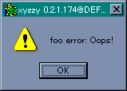

今回はハッシュ (hash) の話です。ハッシュとは、高速なデータ検索アルゴリズムであるハッシュ法のことを指します。ハッシュ法はコンパイラやインタプリタなどで、予約語、関数名、変数名などの管理に使われています。また、Tcl, Perl, Ruby など連想配列をサポートしているスクリプト言語がありますが、その実装にはハッシュ法が使われています。Perl や Ruby で連想配列をハッシュと呼ぶのは、アルゴリズムの名称からきているのです。
Common Lisp の場合、ハッシュ表というデータが用意されているので、簡単にハッシュ法を利用することができます。もちろん、xyzzy Lisp でもサポートされています。今回は「ハッシュ表」の使い方を説明します。
ハッシュ法は拙作のページ ちょっと寄り道「ハッシュ法」 で説明しましたが、ここで簡単に復習しておきましょう。
ハッシュ法は、ハッシュ表と呼ばれるデータを格納する配列と、データを数値に変換するハッシュ関数を用意します。たとえば、ハッシュ表の大きさを n とすると、ハッシュ関数はデータを 0 から n - 1 までの整数値に変換するように作ります。この値をハッシュ値と呼びます。ハッシュ値はハッシュ表の添字に対応し、この位置にデータを格納します。つまり、ハッシュ関数によってデータを格納する位置を決める探索方法がハッシュ法なのです。
ハッシュ法で不特定多数のデータを扱う場合、異なるデータでも同じハッシュ値が生成されることがあります。これをハッシュ値の衝突といいます。つまり、データをハッシュ表に登録しようとしても、すでに先客が居座っているわけです。この場合、2 種類の解決方法があります。
ひとつは、ハッシュ表に複数のデータを格納することです。配列にはひとつのデータしか格納できないので、複数個のデータをまとめて格納しておく工夫が必要になります。このときによく利用されるデータ構造がリストです。ハッシュ表からデータを探索する場合、まずハッシュ値を求め、そこに格納されているリストの中からデータを探索します。
この方法ではハッシュ値の衝突が頻繁に発生すると、データを格納するリストが長くなるため、探索時間が余分にかかってしまいます。効率よく探索を行うには、ハッシュ表の大きさとハッシュ関数の選択が重要になります。また、リストの代わりに二分探索木を使う方法もあります。
もうひとつは、空いている場所を探してデータをそこに入れる方法です。新しい場所を探すといっても、テーブルの先頭から線形探索するのではなく、最初とは違うハッシュ関数を用意して、新しくハッシュ値を計算させて場所を決めます。これを空いている場所が見つかるまで繰り返します。
この方法では、データの最大数はハッシュ表の大きさに制限されます。また、ハッシュ表の空きが少なくなると、探索効率も極端に低下してしまいます。このため、ハッシュ表の空きが少なくなったら、ハッシュ表のサイズを大きくし、ハッシュ表を作り直す作業を行うのがふつうです。これをリハッシュ (rehash) といいます。そのあと探索効率は良くなるので、リハッシュにかけた時間のもとは十分にとれます。
Common Lisp のハッシュ表は、後者の方法を採用しているようです。Common Lisp の場合、ハッシュ表は特定のキーと特定のデータを関連付けるデータ構造です。つまり、キーを使ってハッシュ値を計算し、ハッシュ表のその場所へデータを格納します。それでは、ハッシュ表を操作する関数を説明します。
ハッシュ表を作るには関数 make-hash-table を使います。
make-hash-table &key :test :size :rehash-size :rehash-threshold
キーワード :test にはキーを比較する関数 eq, eql, equal, equalp のどれかを指定します。省略された場合は eql が使用されます。:size はハッシュ表の初期サイズ、:rehash-size はリハッシュするときにハッシュ表を増やす割合、:rehash-threshold はリハッシュするときのしきい値を指定します。よく使われるキーワードは :test と :size です。リハッシュの処理は Lisp システムに任せておけばいいので、ほかのキーワードはとくに指定する必要はないでしょう。
ハッシュ表から値を求めるには関数 gethash を使います。
gethash key hash-table &optional default
gethash は hash-table から key を検索し、格納されているデータを返します。キーが見つからない場合は default を返します。default が省略された場合は nil を返します。ハッシュ表に値を書き込むときは setf を使います。簡単な使用例を示しましょう。
(setq a (make-hash-table :test #'equal)) => #<hash table> (setf (gethash "abc" a) 100) => 100 (gethash "abc" a) => 100 (gethash "ABC" a) => nil (setq b (make-hash-table :test #'equalp)) => #<hash table> (setf (gethash "abc" b) 100) => 100 (gethash "abc" b) => 100 (gethash "ABC" b) => 100
文字列をキーにする場合は、:test に equal か equalp を指定します。equal は英大小文字を区別するので、abc と ABC は異なるキーと判断されます。したがって、abc の値は 100 ですが、ABC の値は nil （キーがみつからない）となります。ところが、equalp は英大小文字を区別しません。abc と ABC は同じキーと判断されるため、abc に 100 をセットすれば、ABC の値も 100 となります。
ハッシュ表からデータを削除するには関数 remhash を使い、ハッシュ表をクリアするには関数 clrhash を使います。
remhash key hash-table clrhash hash-table
remhash は hash-table の中の key に対応するデータを削除します。データがあれば真を、なければ偽を返します。clrhash は hash-table からすべてのデータを取り除き、hash-table を返します。
ハッシュ表に格納されたデータ数を求めるには関数 hash-table-count を使います。
hash-table-count hash-table
ハッシュ表が生成された場合や clrhash でクリアされた場合、データの個数は 0 になります。
ハッシュ表にもマップ関数が用意されています。
maphash function hash-table
関数 function には 2 つのデータ、キーとその値が渡されます。maphash はふつうのマップ関数とは異なり、function の評価結果をリストにまとめて返すということはしません。ご注意ください。簡単な例を示しましょう。
(setq a (make-hash-table :test #'equalp)) #<hash table> (setf (gethash "abc" a) 10) 10 (setf (gethash "def" a) 20) 20 (setf (gethash "ghi" a) 30) 30 (maphash #'(lambda (key val) (format t "key = ~A, val = ~A~%" key val)) a) key = ghi, val = 30 key = abc, val = 10 key = def, val = 20
キーの順番ですが、ソートされて出力されるとか、データをセットした順番で出力されるというわけではありません。キーの順番は処理系に依存しますので、ご注意くださいませ。
もうひとつ with-hash-table-iterator というマクロが用意されていますが、ちょっと面倒なのでパスします。簡単な処理は maphash で十分だと思います。
それでは簡単な例題として、テキストファイルの単語を数えるプログラムを作りましょう。ただたんに単語を数えるのでは面白くないので、単語は正規表現で指定して、マッチした単語ごとに個数をカウントすることにします。まずプログラムを作る前に、文字列の検索について簡単に説明します。
正規表現を使った文字列の検索は、関数 string-match を使います。
string-match regexp string &optional start end
start, end は検索する部分文字列を指定します。これは列関数と同じ指定方法です。string-match は、検索が成功した位置を返します。失敗した場合は nil を返します。簡単な例を示しましょう。
(string-match "ab+c" "defabbbcdef") => 3
一致した文字列の終了位置は (match-end 0) で求めることができます。ただし、一致した文字列そのものを関数 match-string で求めることはできません。関数 subseq で切り出してください。ちなみに、string-match は Common Lisp ではなく Emacs / Mule にある関数です。
それではプログラムを作りましょう。ファイルから 1 行ずつ読み込み、単語を切り出してハッシュ表に登録します。プログラムは次のようになります。
List 1 : 正規表現で指定した単語をカウントする
(defun count-word (word filename)
(with-open-file (in filename :direction :input)
(let ((word-table (make-hash-table :test #'equal))
buffer find-index start-index)
; １行ずつリード
(while (setq buffer (read-line in nil))
(setq start-index 0)
; 文字列の検索
(while (setq find-index (string-match word buffer start-index))
(setq start-index (match-end 0))
; ハッシュ表にセット
(incf (gethash (subseq buffer find-index start-index) word-table 0))))
; 出力
(print-word-table word-table))))
ストリームから read-line で 1 行読み込みます。start-index は検索開始位置を表します。string-match で検索成功した場合、(match-end 0) で次の位置を求め start-index にセットします。それから、ハッシュ表に単語を登録するときに、マクロ incf を使っていることに注意してください。
incf, decf は変数だけではなく、setf のようにアクセス関数を指定することができます。簡単な例を示しましょう。
(setq a (make-array 10 :initial-element 0)) => #(0 0 0 0 0 0 0 0 0 0) (incf (aref a 4)) => 1 a => #(0 0 0 0 1 0 0 0 0 0)
incf に gethash を使えば、ハッシュ表のデータを +1 することができます。プログラムでは、gethash の default に 0 を指定しているので、キーが存在しない場合は 0 を +1 することになり、エラーは発生しません。なかなか便利な使い方ですね。
次は結果を出力する print-word-table です。
List 2 : 単語と回数を出力する
(defun print-word-table (word-table)
(let (temp)
(maphash #'(lambda (key value) (push (cons key value) temp))
word-table)
(map nil
#'(lambda (x) (format t "~A ~A~%" (car x) (cdr x)))
(sort temp #'> :key #'cdr))))
maphash で単語と回数を取り出してリストに格納します。ラムダ式で局所変数 temp にデータをセットしていますが、これはクロージャが機能しているからできることです。そして、回数でソートしてから出力します。関数 map は result-type に nil が指定されると、関数の評価結果を列に格納せず nil を返します。今回のように、データを出力するだけの場合には便利です。
これでプログラムは完成です。ソートの :key を #'car に変更すれば、アルファベット順に出力できます。また、今回はファイルから入力しましたが、バッファ内のデータをカウントするように改造することもできるでしょう。いろいろと試してみてください。
配列 では、配列（ベクタ）を使って「フィボナッチ関数」を高速化する方法を説明しました。これは、何度も同じ値を計算することがないように、計算した値は配列に格納しておいて、2 回目以降は配列から計算結果を求めることで高速化を実現しました。このように、配列（表）を使ってアルゴリズムを高速化する手法を表計算法といいます。
表を使うアルゴリズムというと、有名なところでは「動的計画法」があります。「ナップザック問題」や「多角形の三角形分割問題」は、動的計画法を使って解くことができます。そしてパズルでも、表を使うと高速に解ける場合があります。それでは問題です。
最初に、整数の上限値を求めましょう。各桁の階乗の和（ 階乗和とします ）は最大で 9! * n 桁になります。たとえば、8 桁の整数の最小値は 10,000,000 ですが、階乗和の最大値は 9! * 8 = 2,903,040 にしかなりません。つまり、7 桁まで調べればいいわけです。したがって、整数の上限値は 9! * 7 = 2540160 となります。
いちばん簡単なプログラムは、1 から 2540160 までの階乗和を求めてチェックすることです。プログラムは次のようになります。
List 3 : とても遅い解法プログラム
; 0 - 9 の階乗
(defvar *fact-table*
#(1 1 2 6 24 120 720 5040 40320 362880))
; 階乗和を求める
(defun factsum (num)
(let ((value 0))
(while (plusp num)
(multiple-value-bind (q r)
(truncate num 10)
(incf value (aref *fact-table* r))
(setq num q)))
value))
; パズルの解法
(defun solve ()
(dotimes (n 2540160)
(if (= (factsum n) n)
(print n))))
これはとても遅いプログラムです。階乗を求めるのに配列 *fact-table* を使っていますが、この方法も表計算法といえるでしょう。確かに、いちいち階乗を計算するよりも速くなりますが、この程度の工夫では「焼け石に水」といったところです。そこで、配列を上手に使って、高速な解法プログラムを作ってください。
時間がかかる原因のひとつに、同じ値を何度も計算していることがあげられます。たとえば、12340 から 12349 の階乗和を求める場合、1234 の階乗和がわかっていれば、下 1 桁の階乗の値を加算するだけで簡単に求めることができますね。そこで、求めた階乗和を配列に格納しておくことにします。プログラムは次のようになります。
List 4 : パズルの解法（その１）
(defun solve1 ()
(let ((table (make-array 254016)) j k l)
; 1 桁のチェック
(dotimes (n 10)
(if (= n (aref *fact-table* n))
(print n))
(setf (aref table n) (aref *fact-table* n)))
; 2 桁以降のチェック
(do ((n 1 (1+ n)))
((>= n 254016))
(setq l (* n 10))
(dotimes (m 10)
(setq k (+ (aref table n) (aref table m))
j (+ l m))
(if (< j 254016)
(setf (aref table j) k))
(if (= k j)
(print k))))))
最初に 1 桁の数値 (0 - 9) をチェックして、階乗和を table に格納します。そして、2 桁以上の数値は n と m に分け、m が下 1 桁を表すことにします。すると、数値 n * 10 + m の階乗和は「n の階乗和 + m の階乗和」で求めることができますね。n の階乗和は計算済みで配列から値を取り出すだけなので、高速に計算することができるはずです。それでは実行してみましょう。その前に、バイトコンパイルすることをお忘れなく。
1 2 145 40585
正解は 4 通りで、実行時間は M.Hiroi のオンボロマシン（Pentium 166 MHz）で約 67 秒でした。最初のプログラムとは雲泥の差ですが、それでもループが 2,540,160 回まわるので、Lisp ではちょっと荷が重いかもしれません。まあ、M.Hiroi のマシンがオンボロすぎるのが問題なのでしょうね。
そうはいっても、繰り返しの回数を減らすことができれば、もっと高速化することができるはずです。「そんなにうまい方法があるのか？」と疑問に思われた方もいるでしょう。ところが、松田晋氏が素晴らしい方法を考案されています。
松田氏の方法は、整数を上位 1 - 4 桁 (1 - 2540) と下位 3 桁 (000 - 999) に分け、上位 1 - 4 桁の数字から条件を満たす下位 3 桁の数字を求める、というものです。たとえば、上位の数字が 40 の場合を考えてみましょう。次の式を見てください。
40 の階乗和 + n の階乗和 = 40000 + n
n の階乗和 - n = 40000 - 40 の階乗和
= 40000 - 25 = 39975
下位 3 桁を n とすると、整数 40000 + n とその階乗和が等しくなるには、「 n の階乗和 - n 」 の値が「 40000 - 40 の階乗和 」に等しくなればいいわけです。n の取りうる値は 000 から 999 までの 1000 個しかありませんね。このような場合、あらかじめ「 n の階乗和 - n 」を計算して、表に格納しておくと便利です。これも表計算法のひとつです。上位の数字が 40 であれば、表から 39975 になる n を探せばいいわけです。このとき、単純な線形探索ではなく高速な探索アルゴリズムを使うことで、実行速度を劇的に高速化することができます。
松田氏のプログラムはＣ言語で作成されていて、探索アルゴリズムには「二分探索」が使われています。データの値や総数があらかじめ決められている場合、データを配列に格納して二分探索するのは常套手段といえます。ですが、今回は Lisp でプログラムを作るので、配列ではなく「ハッシュ表」を使ってみましょう。
最初に下位 3 桁の値を格納するハッシュ表を作ります。
List 5 : 下位 3 桁のハッシュ表を作る
(defun make-3digit-hash-table ()
(let ((table (make-hash-table)) n m)
(dotimes (i 10 table)
(dotimes (j 10)
(dotimes (k 10)
(setq n (+ (* i 100) (* j 10) k)
m (+ (aref *fact-table* i)
(aref *fact-table* j)
(aref *fact-table* k)))
(push n (gethash (- m n) table)))))))
ハッシュ表のキーは「 n の階乗和 - n 」で、値が n となります。整数がキーになるので、キーワード :test はデフォルトの eql で大丈夫です。それから、100, 010, 001 などのように同じ階乗和になる整数が複数あるので、整数 n はリストに格納してハッシュ表にセットします。
次は、0 から 999 までの解を求める solve-low を作ります。
List 6 : 0 から 999 までのチェック
(defun solve-low ()
(let ((table (make-array 1000)) j k l)
; 1 桁のチェック
(dotimes (n 10)
(if (= n (aref *fact-table* n))
(print n))
(setf (aref table n) (aref *fact-table* n)))
; 2 桁以降のチェック
(do ((n 1 (1+ n)))
((>= n 100) table)
(setq l (* n 10))
(dotimes (m 10)
(setq k (+ (aref table n) (aref table m))
j (+ l m))
(setf (aref table j) k)
(if (= k j)
(print k))))))
これは「解法その１」で作成したプログラムとほとんど同じで、調べる範囲が 0 から 999 までになっています。それから、作成した配列は 4 桁以上の数を調べるときに再利用できるので、マクロ do の終了時で table を返すことに注意してください。
最後に、4 桁以上の数を調べる solve2 を作ります。
List 7 : パズルの解法（その２）
(defun solve2 ()
(let ((table-low (make-3digit-hash-table))
(table-high (solve-low)) j k l)
; ４桁以降
(do ((n 0 (1+ n)))
((>= n 254))
(setq l (* n 10))
(dotimes (m 10)
(setq k (+ (if (plusp n) (aref table-high n) 0)
(aref table-high m))
j (* (+ l m) 1000))
(dolist (i (gethash (- j k) table-low))
(print (+ j i)))))))
まず、下位 3 桁の値を格納するハッシュ表を make-3digit-hash-tabel で作成し、0 - 999 までの解を solve-low で調べます。次に 4 桁以降の数字を調べます。ここでも、数を n * 10 + m で表しています。n と m の階乗和は、solve-low で作成した表を使って求めています。n が 0 の場合は、階乗和の計算で 1 を加えないことに注意してください。あとは、計算結果からハッシュ表を検索すればいいわけです。
これでプログラムは完成です。実際に実行してみると、オンボロマシン（Pentium 166 MHz）ですが 1 秒もかからずに結果が表示されます。こんなに速くなるとは思っていなかったので、ちょっと驚きました。
ところで、最初に「配列を上手に使って、高速な解法プログラムを作ってください。」と書いてあるのに、ハッシュ表を使ったことは反則技だったかもしれませんね。そこで、次は「二分探索」を使って解法プログラムを作ってみましょう。
「二分探索 (binary search)」は、線形探索の実行時間が要素数 N に比例するのに比べ、log 2 N に比例する時間でデータを探すことができる高速なアルゴリズムです。ただし、探索するデータはあらかじめソートしておく必要があります。詳しい説明は拙作のページ ちょっと寄り道「二分探索」 をお読みください。
それでは、下位 3 桁のテーブルを作成する関数 make-3digit-table から作りましょう。
List 8 : 下位 3 桁の表を作成
(defun make-3digit-table ()
(let ((table (make-array 1000)) n m)
(dotimes (i 10 (sort table #'< :key #'car))
(dotimes (j 10)
(dotimes (k 10)
(setq n (+ (* i 100) (* j 10) k)
m (+ (aref *fact-table* i)
(aref *fact-table* j)
(aref *fact-table* k)))
(setf (aref table n) (cons (- m n) n)))))))
今度は単純な配列です。データはドット対に格納して配列にセットします。ドット対の CAR 部にキー、CDR 部にデータを格納します。二分探索を行うため、キーを昇順にソートします。これは関数 sort を使うと簡単です。キーワード :key に #'car を指定すれば、CAR 部に格納されたキーを昇順にソートすることができます。
次は、表を二分探索する関数 search-table を作ります。
List 9 : 二分探索
(defun search-table (item table)
(let ((low 0) (high 999) middle key)
(while (<= low high)
(setq middle (truncate (+ low high) 2)
key (car (aref table middle)))
(cond ((= key item)
; 発見
(return (get-same-data item table middle)))
((< key item)
(setq low (1+ middle)))
(t (setq high (1- middle)))))))
二分探索は再帰を使わなくても簡単にプログラムできます。最初に、探索する区間を示す変数 low と high を初期化します。次の while ループで、探索区間を半分ずつに狭めていきます。まず、区間の中央値を求めて middle にセットし、そこからキーを取り出して変数 key にセットします。cond で key と item を比較し、等しい場合は探索成功です。get-same-data で同じ値のデータを取り出してループから脱出します。これが関数 search-table の返り値になります。
item が大きい場合は区間の後半を調べます。変数 low に middle + 1 をセットします。逆に、item が小さい場合は前半を調べるため、変数 high に middle - 1 をセットします。これを二分割できる間繰り返します。low が high より大きくなったら分割できないので繰り返しを終了します。この場合はデータを見つけることができませんでした。while の返り値 nil が search-table の返り値になります。
次は、表からデータを取り出す関数 get-same-data を作ります。
List 10 : 同じデータを取得する
(defun get-same-data (item table index)
(let (result)
; 見つけたデータを格納
(push (cdr (aref table index)) result)
; 下へ
(do ((i (1- index) (1- i)))
((minusp i))
(if (= (car (aref table i)) item)
(push (cdr (aref table i)) result)
(return)))
; 上へ
(do ((i (1+ index) (1+ i)))
((>= i 1000) result)
(if (= (car (aref table i)) item)
(push (cdr (aref table i)) result)
(return result)))))
見つけた位置 index から上下方向へ線形探索するだけです。item と同じキーを見つけたら、そのデータを変数 result にプッシュします。最後の do で、ループから脱出するときか繰り返しを終了するときに result を返します。これが get-same-data の返り値となります。
最後にパズルを解く solve3 を作ります。
List 11 : パズルの解法（その３）
(defun solve3 ()
(let ((table-low (make-3digit-table))
(table-high (solve-low)) j k l)
(do ((n 0 (1+ n)))
((>= n 254))
(setq l (* n 10))
(dotimes (m 10)
(setq k (+ (if (plusp n) (aref table-high n) 0)
(aref table-high m))
j (* (+ l m) 1000))
(dolist (i (search-table (- j k) table-low))
(print (+ j i)))))))
処理内容は solve2 (List 7) とほぼ同じです。下位 3 桁の値を格納する表を make-3digit-tabel で作成することと、表は search-table を使って検索するところが異なるだけです。
これでプログラムは完成です。実際に実行してみると、オンボロマシン（Pentium 166 MHz）ですが約 1 秒で結果が表示されます。ハッシュ表を使ったプログラムよりも遅いですが、「解法その１」で作成したプログラムの 60 倍以上高速化したわけですから、二分探索を使った効果は十分に出ていると思います。
今回は、特定のパズルを解くために「二分探索」のプログラムを作りました。Common Lisp のようにハッシュ表が利用できる場合、二分探索を使う機会はあまりないかもしれませんが、汎用的に使える関数として作り直してみるのも勉強になると思います。興味のある方は改造してみてください。
Common Lisp の コンディション (condition) は、ほかのプログラミング言語では 例外 (exception) と呼ばれている機能です。例外はエラー処理で使われることがほとんどなので、「例外＝エラー処理」と考えてもらってもかまいません。最近では Ｃ++, Java, Perl, Ruby, Python などのように、例外処理機能を持っているプログラミング言語が多くなりました。
たとえば、1 から 100 までの 2 乗と 3 乗の値をファイルに書き込む処理を考えてみましょう。Ｃ言語でプログラムすると、次のようになります。
List 12 : データの出力(Ｃ言語)
#include <stdio.h>
#include <stdlib.h>
int main()
{
int i;
FILE *fp = fopen( "test.dat", "w" );
if( fp == NULL ){
fprintf( stderr, "test.dat をライトオープンできません\n" );
exit( EXIT_FAILURE );
}
for( i = 1; i <= 100; i++ ){
if( fprintf( fp, "%d, %d, %d\n", i, i * i, i * i * i ) < 0 ){
fprintf( stderr, "データをライトできません\n" );
exit( EXIT_FAILURE );
}
}
if( fclose( fp ) ){
fprintf( stderr, "test.dat をクローズできません\n" );
exit( EXIT_FAILURE );
}
return EXIT_SUCCESS;
}
Ｃ言語には例外処理がありません。このため、Ｃ言語では標準関数を実行したときにエラーが発生した場合、エラーを表す値を返すようになっています。このプログラムでは、fopen でファイルをオープンするとき、fprintf でデータをファイルに書き込むとき、ファイルをクローズするときの 3 か所でエラーチェックを行っています。データを書き込む処理は簡単なのですが、エラーチェックが入っているためプログラムが読みにくくなっていますね。また、エラーチェックを忘れると、エラーが発生したときにプログラムは正常に動作しません。
このプログラムを Common Lisp で書くと次のようになります。
List 13 : データの出力(Lisp)
(defun main ()
(with-open-file (out "test.dat" :direction :output)
(do ((i 1 (1+ i)))
((> i 100))
(format out "~D, ~D, ~D~%" i (* i i) (* i i i)))))
エラーをチェックする処理がありませんね。これは例外処理が働いて、エラーが発生したらプログラムの実行が中断されるからです。xyzzy Lisp の場合、エラーが発生するとダイアログでメッセージが表示されます。例外処理のおかげで、プログラムでエラーをチェックする必要がなく、プログラムをすっきりと書くことができます。
しかしながら、エラーが発生するたびに実行を中断するのではなく、致命的なエラーでなければプログラムの実行を継続したい場合もあるでしょう。このような場合にこそ、例外処理が役に立つのです。Common Lisp では、発生したエラーを捕まえるマクロ handler-case が用意されています。
handler-case expression (type (var) forms) (type1 (var1) forms1) .....
handler-case は expression を実行し、その評価結果を返します。もし、expression の実行中にエラーが発生した場合、expression の実行は中断され、そのエラーが handler-case で指定したデータ型 (type) であれば、その節の forms を実行します。
Common Lisp の場合、エラーはコンディションというデータ型として定義されています。コンディションはプログラムの状態を表すデータ型で、エラーもその中のひとつなのです。また、Common Lisp では「エラーが発生した」とは言わないで、「コンディションが通知された」という表現をします。Common Lisp のコンディションは CLOS (Common Lisp Object System) のクラスを使って実装されていますが、xyzzy Lisp ではクラスの代わりに構造体が使われています。
コンディションは Lisp システムからだけではなく、プログラムでコンディションを生成してそれを通知することができます。もちろん、通知されたコンディションは handler-case で捕まえることができます。つまり、コンディションはエラー処理以外にも活用することができるのです。基本的には catch & throw の大域脱出と同じなのですが、Lisp システムのエラーを処理できるように、便利な機能が組み込まれているわけです。
コンディションは階層構造になっています。その一部を xyzzy リファレンスの「エラー処理関係」から引用します。
condition ├simple-condition ├serious-condition │├error ││├simple-error │││└plain-error ││├arithmetic-error │││├division-by-zero │││├floating-point-overflow │││├floating-point-underflow │││├domain-error │││├bignum-overflow │││└power-number-too-large ││├cell-error 図 1 : コンディションの階層図（一部）
コンディションはオブジェクト指向でいう「継承関係」になっています。handler-case に error を指定すれば、error 以下に定義されているコンディションをすべて捕まえることができます。
たとえば、0 で割ったときには division-by-zero が通知されますが、これは error や arithmetic-error で捕まえることができます。逆に、handler-case に divsion-by-zero を指定すれば、それ以外のエラーは捕捉されません。
handler-case の使い方は簡単です。次の例を見てください。
(handler-case (/ 10 0) (division-by-zero (c) c)) => #S(division-by-zero operation / operands (10 0))
0 で除算したので division-by-zero が通知され、それを handler-case で捕捉しています。変数 c にはコンディションがセットされ、その節の S 式が評価されます。この場合は変数 c にセットされたコンディションを返しているだけです。コンディションにはスロットが定義されていて、そこにエラー情報がセットされます。division-by-zero には operation と operands というスロットがあり、その値から関数 / を評価したときに 0 で除算したことがわかります。
ここで、(/ 10 0) の代わりに (/ 10 nil) を実行してください。すると、type-error が通知されますが、これは handler-case に設定されていないので、捕捉されずにダイアログが表示されます。両方とも捕捉したい場合は、次のようにします。
(handler-case (/ 10 nil) (division-by-zero (c) c) (type-error (c) c)) => #S(type-error datum nil expected-type number)
捕捉したいコンディションが複数ある場合は、それを続けて書けばいいわけです。まあ、個々にコンディションを設定するのは大変ですから、コンディションの継承関係を上手に活用してください。それから、コンディションに定義されているのスロットは、コンディションの種類によって異なります。ご注意くださいませ。
このほかに、エラー ( error ) が発生したら捕捉して nil とコンディションを返すマクロ ignore-errors があります。
コンディションを通知する場合は関数 error を使うと簡単です。error は「書式文字列とその引数」だけではなく、引数にコンディションを与えることができます。次の例を見てください。
(handler-case (error 'division-by-zero) (error (c) c)) => #S(division-by-zero operation nil operands nil) (handler-case (error "エラー ~D" 10) (error (c) c)) => #S(simple-error format-string "エラー ~D" format-arguments (10))
error の第 1 引数にコンディションを表す型指定子を与えると、そのコンディションを通知することができます。また、今までのように書式文字列と引数を与えると、simple-error が通知されていることがわかります。
ところで、型指定子だけではコンディションのスロットに値をセットすることができません。この場合、関数 make-condition でコンディションを生成し、スロットの値をセットして error に渡します。簡単な例を示しましょう。
make-condition type &rest slot-initializations
(make-condition 'division-by-zero :operation '/ :operands '(100 0))
=> #S(division-by-zero operation / operands (100 0))
(handler-case (error (make-condition 'division-by-zero
:operation '/
:operands '(100 0)))
(error (c) c))
=> #S(division-by-zero operation / operands (100 0))
make-condition はコンディション（構造体）を生成するだけです。これを error に渡せばいいわけです。
コンディションはマクロ define-condition を使って、ユーザーが独自に定義することができます。
(define-condition name (parent-type) (slot-name ...) (option ...))
name にはコンディションの名前、parent-type には上位のコンディション（いわゆるスーバークラス）、slot-name にはコンディション内のスロットを指定します。option はいくつかありますが、その中で :report が重要です。handler-case でコンディションを捕捉しない場合、xyzzy Lisp ではダイアログでメッセージが表示されます。オプション :report には、このメッセージを作成する関数を指定します。
それでは、簡単な使用例を示します。simple-error の下にコンディション foo-error を作りましょう。
List 14 : コンディションの生成
(define-condition foo-error (simple-error) (foo)
(:report (lambda (c s)
(format s "foo error: ~A" (foo-error-foo c)))))
foo-error にはスロット foo を用意します。:report に設定された関数が呼び出される場合、第 1 引数にコンディションが、第 2 引数にストリームが渡されます。コンディションからデータを読み取って表示するメッセージを作成し、それをストリームに出力します。:report に設定された S 式には function が適用されるので、ラムダ式の前に #' を付ける必要はありません。また、:report には単なる文字列を指定してもかまいません。その場合、ダイアログには文字列とスロットの値が表示されます。
それでは実行してみましょう。
(handler-case (error 'foo-error) (error (c) c)) => #S(foo-error format-string nil format-arguments nil foo nil)
上位のコンディション simple-error のスロット format-string と format-arguments が、きちんと継承されていることがわかります。xyzzy Lisp のコンディションは構造体を使っているため、スロットは継承されないだろうと思っていたので、この結果にはちょっと驚きました。
今度はエラーを捕捉しないでダイアログを表示しましょう。
(error (make-condition 'foo-error :foo "Oops!")) エラーダイアログ
きちんとエラーメッセージが表示されていますね。